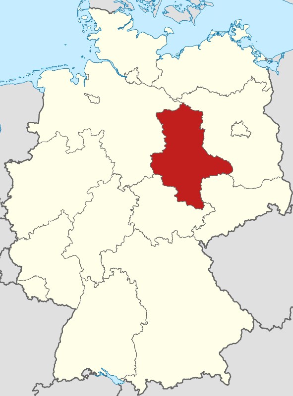

Alter
- Stärkste Kraft in sämtlichen Alterskohorten unter 60 Jahren
- Kernwählerschaft: 30–59-Jährige (teils > 50 %)
- Ausnahme Ü70: CDU bleibt hier nahezu gleichauf
„Zwischen Systemopposition und rechter Normalität: Inwiefern wählt Sachsen-Anhalt die AfD noch aus Protest oder bereits aus gefestigter politischer Überzeugung?“

Wahlkreiskarte Sachsen-Anhalt 2026
Offizielle Wahlkreiskarte der Erst-/Zweitstimmen (Landeswahlleiterin Sachsen-Anhalt / Heinrich-Böll-Stiftung / Wikimedia Commons).
assets/wahlkreiskarte-2026.png
Anstieg um +17,5 Prozentpunkte gegenüber der Landtagswahl 2021
Rund ca. 30 % aller AfD-Stimmen stammen aus dem bisherigen Nichtwählerlager
Der massive Zulauf erfolgt ungeachtet dessen, dass der Landesverband seit 11/2023 vom Verfassungsschutz als „gesichert rechtsextremistisch“ eingestuft wird.
Altersgruppen-Diagramm / Nachwahlbefragung (ZDF / Forschungsgruppe Wahlen)
Optionaler Platz für ein ergänzendes Altersgruppen-Diagramm oder Zahlenmaterial aus der Nachwahlbefragung.
DIW Wochenbericht (Fratzscher et al.): „Das AfD-Paradox“
Platzhalter für deine DIW-Studiendetails / Infografik zur Einkommens- und Steuerwirkung (assets/diw-paradox.png).
fürchten den persönlichen Verlust ihres Lebensstandards im Zuge des Wandels.
WSI-Erwerbspersonenpanel (Hans-Böckler-Stiftung, Kohlrausch / Hövermann)
Platzhalter für WSI-Studiengrafik / konkrete Befunde zu Transformationsängsten & Demokratievertrauen (assets/wsi-studie.png).
FES Mitte-Studie 2024/25: „Die angespannte Mitte“
Buchcover der aktuellen Mitte-Studie oder Diagramm zum „Graubereich“ hier einfügen.
assets/fes-mitte-studie.png
3,3 % geschlossenes rechtsextremes Weltbild – jedoch 20 % im offenen, ambivalenten Graubereich.
Nur 52 % sehen die Demokratie als gut funktionierend (lediglich 37 % empfinden sie als gerecht).
25 % vertreten „libertär-autoritäre“ Positionen (hoher Leistungsdruck & Entsolidarisierung).
FGZ-Studie (Quent / Salheiser)
Platz für ergänzende Befunde / Zitate aus deiner FGZ-Studie.
Eigenständiger Regierungsanspruch statt kurzfristiger Protestwahl – bei gleichzeitiger Fundamentaldistanz zu allen übrigen Parteien.
Soziale Abstiegsangst, subjektive Abwertung und Regierungsunzufriedenheit mobilisieren Nichtwählende und senken die ursprüngliche Eintrittsschwelle.
Hohe Kompetenzzuschreibung, 87 % Regierungswunsch, kommunale Verankerung & bewusstes Ignorieren der Rechtsextremismus-Einstufung.
„Kein kurzfristiges Warnsignal mehr, sondern ein weltanschaulich geschlossenes, dauerhaft verankertes Wählerlager.“
Die AfD und ihre Wählerschaft am Beispiel Sachsen-Anhalt